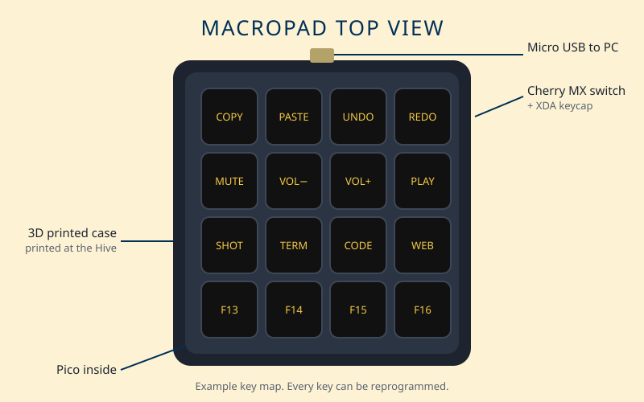

Engineer ~ Musician ~ Leader
Welcome! I am a second year Computer Engineering student at Georgia Tech. I like to understand how things work and then build them myself. This site shows my projects, my experience and where I want my career to go. Take a look around and see how I could add to your team.

For my Discovery Project I designed and built a 16 key macro keyboard. It runs on a Raspberry Pi Pico and lives in a case I 3D printed at the Hive makerspace. One press of a key runs a whole shortcut on my laptop.
It taught me how hardware and code meet. Switches become signals. Signals become logic. Logic becomes something useful.
Read the Project Feature